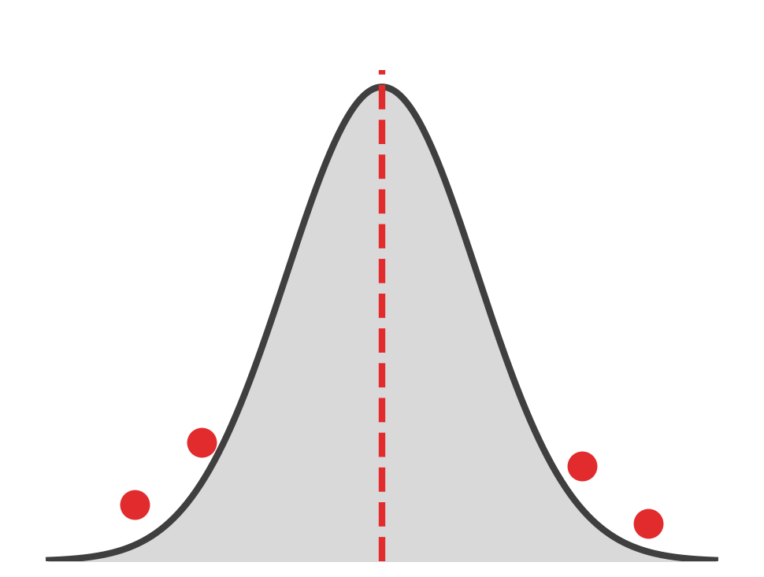
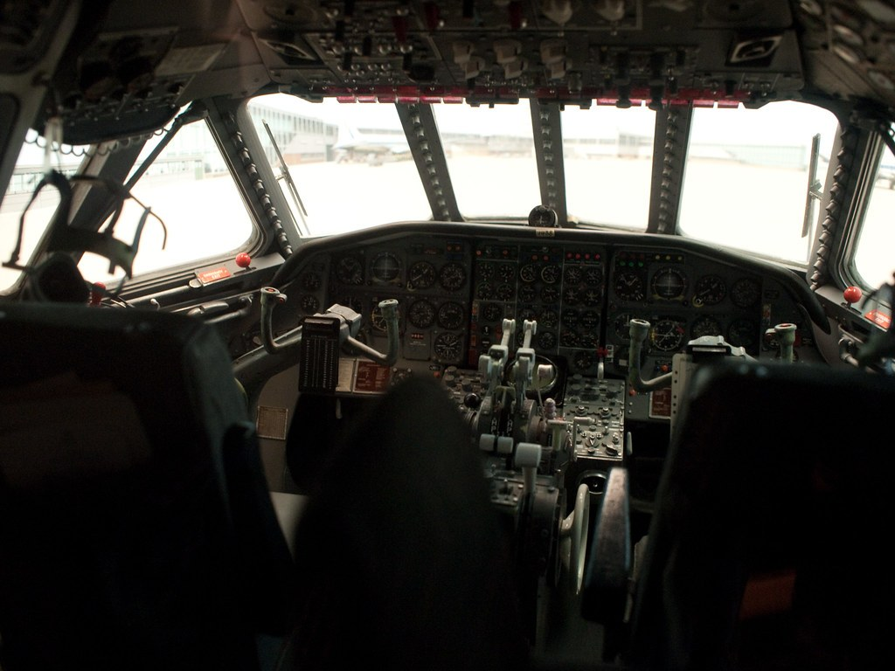
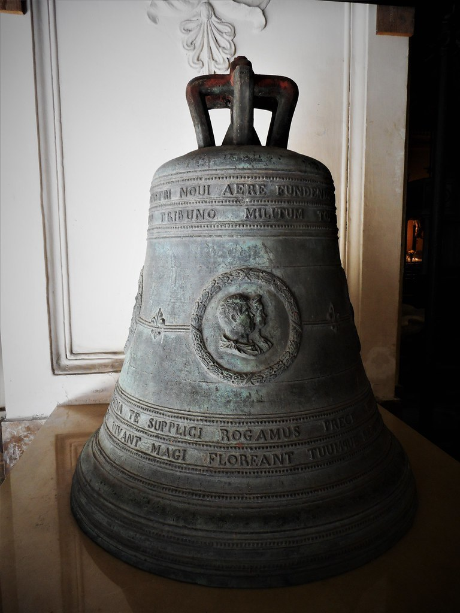
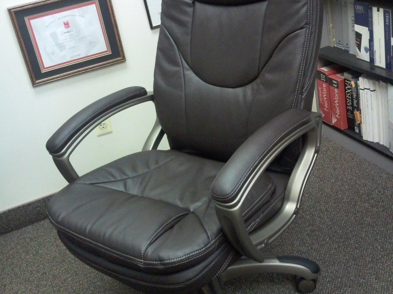

06
데이톨로지 — 데이터로 읽는 인간과 사회
평균의
종말
'평균 인간'의 사상적 연원 · 강사 : ○○○

CONTENTS
평균의
종말

학습 목표
목표 1
케틀레 → 테일러 → 표준화 교육으로 이어지는 평균 중심주의의 '연결고리' 설명
목표 2
평균이 개인을 가리는 사례 찾기와 탈평균적 설계 제안
오늘의 질문
1950년경 미 공군, 조종사 4,000여 명을
신체 10개 항목으로 측정
10개 모두 '평균'인 조종사는 몇 명?
평균 조종사는 없다
[비유] 비행기 조종석

사진: rxb / CC BY-SA 2.0
고정 조종석 = 평균에 맞춘 설계
- 평균 체격에 맞춰 고정된 좌석·페달·조종간
- 평균과 다른 조종사 = 손이 닿지 않는 장치
- 사고 원인을 '조종사 실수'로만 보던 시선
- 문제는 사람이 아니라 기준
평균 조종사는 없다
항목을 하나씩 더할수록 사라지는 '평균인'
평균 인간의 탄생: 케틀레
[비유] 종(bell)

사진: Carlo Raso / Public Domain Mark
종의 실루엣 = 정상분포곡선
- 키·몸무게·소득 → 가운데가 높은 종 모양
- 종의 꼭대기 = 평균
- 많이 모을수록 또렷해지는 모양
- 표본 추론의 기본 전제
평균 인간의 탄생: 케틀레
많이 모으면 보이는 규칙성 → '평균 인간'
평균 인간의 탄생: 케틀레
아돌프 케틀레 (1796~1874)
평균의 쓸모
- 집단을 대표하는 값
- 확률적 기대치
- 시험 점수, 연봉, 야구 타율
케틀레의 시도
- 인구·범죄 통계로 사회의 규칙성 실증
- 1835년 '평균 인간(average man)' 개념
- 평균 = 이상형이라는 생각의 출발
연결고리: 테일러주의와 표준화 교육
[비유] 자동차 조립 라인
사진: aldenjewell / CC BY 2.0
조립 라인 = 테일러주의
- 정해진 위치, 정해진 동작, 정해진 시간
- 표준 작업량·표준 시간·평균 임금
- 효율 ↑, 사람은 기준에 맞춰야 하는 부품
- 같은 논리가 학교로: 표준화 교육
연결고리: 테일러주의와 표준화 교육
케틀레 → 테일러 → 표준화 교육 → 오늘
연결고리: 테일러주의와 표준화 교육
평균에서 벗어나면 '비정상'
공장
테일러
- 1874년 필라델피아 기계공장
- 과학적 관리법
- 사람을 기준에 맞춤
학교
맹켄의 비판
- 표준화된 시민 양성
- 반대 의견·독창성 억압
- 학력고사·수능 = '평균 인간' 양성 체제?
사회
세스 고딘
- 『이상한 놈들이 온다』(2011)
- 평균 밖 집단 = 비정상 분류
- 히피·마니아 …
탈평균: 기준을 사람에 맞추기
[비유] 높이 조절 의자

사진: SafeTinspector / CC BY-SA 2.0
조절 의자 = 탈평균 설계
- 레버 하나로 높이·등받이 조절
- 평균 한 명이 아니라 모든 사람에게 맞춤
- 미 공군의 해법 = 조절 가능한 조종석
- 오늘날 자동차 시트 조절의 계기
탈평균: 기준을 사람에 맞추기
고정 좌석 vs 조절 가능한 좌석
탈평균: 기준을 사람에 맞추기
저자의 결론
차이 = '틀림'이 아니라 '다름'연재 ⑧ 결론 요약
- 평균 = 효율적인 해석 도구, 그러나 개인의 특별함을 가림
- 다양성이 공존하는 시대의 인식 전환
- 미래를 이끌 사람 = 남과 다른 생각
활동
활동 (60분): 우리 반 '평균인'은 존재하는가
STEP 1 · 10분
익명 설문
- 키, 통학 시간, 수면 시간, 스마트폰 사용 시간, 형제 수 등 8개
STEP 2 · 25분
분석
- 항목별 평균 ± 표준편차의 30% = '평균'
- 8개 모두 평균인 학생 수 세기
STEP 3 · 25분
설계
- 강의실·수업 방식·앱 화면 중 하나
- '조절 가능한 조종석' 원리로 재설계
토론 질문
정답 없는 질문 2개
개인 맞춤 알고리즘 = 탈평균의 실현? 아니면 새로운 평균화(군집화)?
그래도 평균이 꼭 필요한 영역은? (공중보건, 정책 설계 …)
정리 및 확인 문제
오늘의 핵심 4줄
평균 조종사 = 4,000여 명 중 0명
케틀레 = 평균 인간(1835), 평균을 이상형으로
연결고리 = 케틀레 → 테일러주의 → 표준화 교육
탈평균 = 사람을 기준에 맞추기 → 기준을 사람에 맞추기
정리 및 확인 문제
확인 문제
문제 1
미 공군 조종사 측정에서 10개 항목 모두 평균에 맞는 조종사 수와, 공군이 택한 해결책
문제 2
'평균 인간' 개념을 제시한 인물과, 그 생각을 공장에 적용한 관리 방식
문제 3
반 평균 점수가 같은 두 반 — 평균만으로 알 수 없는 것 한 가지
문제 2: 아돌프 케틀레 → 테일러주의(과학적 관리법)
문제 3: 예) 개인별 차이·분포(고르게 퍼졌는지, 양 끝에 몰렸는지), 특정 학생의 위치
정리 및 확인 문제
마무리
이미지 출처
사진 (Openverse 검색, CC 라이선스)
- Model airplane cockpit — rxb, CC BY-SA 2.0, flickr
- Volkswagen Beetle Assembly Line — aldenjewell, CC BY 2.0, flickr
- Bronze bell (after 1837) with portraits of the King Ferdinand II of Bourbon and his wife, the Queen Maria Teresa - Santa Maria delle Grazie a Toledo Church in Naples — Carlo Raso, Public Domain Mark, flickr
- my new office chair at work — SafeTinspector, CC BY-SA 2.0, flickr
- 애니메이션·그림 — manim, matplotlib으로 직접 제작
- 인용 — 김성태, 연재 ⑧ 「'평균의 종말'과 역사적 '연결고리'」(지디넷코리아, 2021.06.28); 토드 로즈, 『평균의 종말』